Mass-Spring-Damper Systems
System Modeling and Control · Chapter 4
Contents
Mechanical Work
Mass–Spring–Damper Systems
Simulation
Mechanical Work
- A mass \(m\) moves along the \(x\)-axis with a force \(F\) acting on it.
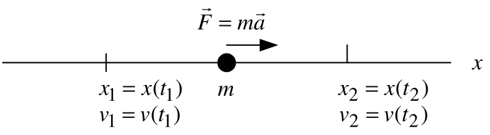
\(x(t)\), \(v(t)=\dfrac{dx(t)}{dt}\), and \(a(t)=\dfrac{d^2x(t)}{dt^2}\) denote position, velocity, and acceleration.
By Newton’s law, \[F=ma=m\frac{dv}{dt}=m\frac{d^2x}{dt^2}.\]
The work \(W\) done on \(m\) by \(F\) from \(x_1\) to \(x_2\) is \[W\triangleq\int_{x_1}^{x_2}F(x)\,dx.\]
Define \(x_1=x(t_1)\), \(v_1=v(t_1)\), \(x_2=x(t_2)\), and \(v_2=v(t_2)\). Then \[W=\int_{x_1}^{x_2}F(x)\,dx =\int_{t_1}^{t_2}\underbrace{m\frac{dv}{dt}}_{F}\underbrace{v\,dt}_{dx}.\]
Work and Kinetic Energy
We have
\[\begin{aligned} W\triangleq\int_{x_1}^{x_2}F(x)\,dx &=\int_{t_1}^{t_2}m\frac{dv}{dt}v\,dt \\ &=\int_{t_1}^{t_2}\frac{d}{dt}\left(\frac{mv^2}{2}\right)dt \\ &=\left.\frac{mv^2}{2}\right|_{v_1}^{v_2} \\ &=\frac{1}{2}mv_2^2-\frac{1}{2}mv_1^2. \end{aligned}\]
The kinetic energy (KE) of the mass is defined to be \(\dfrac{1}{2}mv^2\).
The work done on \(m\) equals the change in its kinetic energy: \[\int_{x_1}^{x_2}F(x)\,dx =\frac{1}{2}mv_2^2-\frac{1}{2}mv_1^2.\]
Example Horizontal Mass–Spring–Damper System
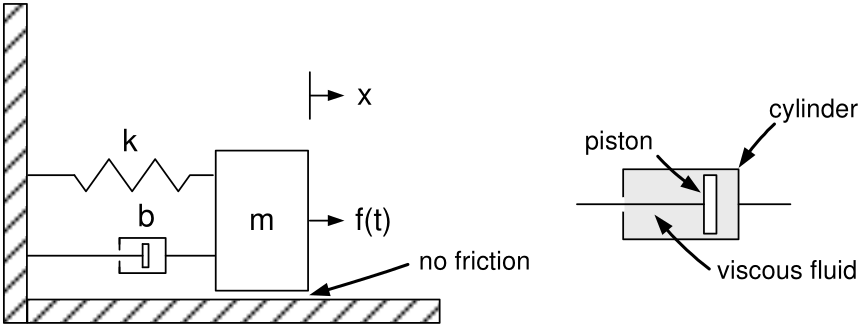
If \(x=0\), the spring is neither compressed nor stretched—it is relaxed.
The force on the mass \(m\) due to the spring is \(F_{mk}=-kx\).
- If \(x>0\), the spring pulls \(m\) to the left.
- If \(x<0\), the spring pushes \(m\) to the right.
A damper consists of a piston encased in a sealed, fluid-filled cylinder. The piston’s motion is opposed by the viscous fluid.
The force of the damper on \(m\) is \(F_{mb}=-b\dot{x}\).
- If \(\dot{x}>0\), the fluid provides a resistive force in the \(-x\) direction.
- If \(\dot{x}<0\), the fluid provides a resistive force in the \(+x\) direction.
Example Horizontal Mass–Spring–Damper System (continued)
\(f(t)\) denotes an external force:
\[m\frac{d^2x}{dt^2}=-kx-b\frac{dx}{dt}+f(t),\]
or
\[m\frac{d^2x}{dt^2}+b\frac{dx}{dt}+kx=f(t).\]
With zero initial conditions, the Laplace transform gives
\[(ms^2+bs+k)X(s)=F(s),\]
so
\[X(s)=\frac{1}{ms^2+bs+k}F(s).\]
With nonzero initial conditions,
\[X(s)= \underbrace{\frac{1}{ms^2+bs+k}}_{\text{transfer function}} \underbrace{F(s)}_{\text{input}} +\underbrace{\frac{mx(0)s+bx(0)+m\dot{x}(0)}{ms^2+bs+k}}_{\text{initial-condition response}}.\]
Example: Vertical Mass–Spring–Damper System
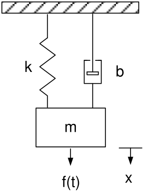
Equations of motion:
\[m\frac{d^2x}{dt^2}=-kx-b\frac{dx}{dt}+mg+f(t),\]
or
\[m\frac{d^2x}{dt^2}+b\frac{dx}{dt}+kx=mg+f(t).\]
At \(x=0\), the spring is relaxed. With zero initial conditions,
\[(ms^2+bs+k)X(s)=F(s)+\frac{mg}{s},\]
so
\[X(s)=\frac{1}{ms^2+bs+k}\left(F(s)+\frac{mg}{s}\right).\]
Example: Vertical Mass–Spring–Damper System (continued)
With \(f(t)\equiv0\),
\[m\frac{d^2x}{dt^2}+b\frac{dx}{dt}+kx=mg.\]
Equilibrium means the mass \(m\) is at rest: \(\dot{x}=\ddot{x}\equiv0\).
At equilibrium, \(kx_0=mg\), so \(x_0=mg/k\). With \(\Delta x=x-x_0\),
\[\begin{aligned} m\frac{d^2}{dt^2}(\Delta x+x_0) +b\frac{d}{dt}(\Delta x+x_0) +k(\Delta x+x_0)&=mg+f(t),\\ m\frac{d^2\Delta x}{dt^2} +b\frac{d\Delta x}{dt} +k\Delta x +\underbrace{m\frac{d^2x_0}{dt^2}+b\frac{dx_0}{dt}}_{0} +\underbrace{kx_0}_{mg}&=mg+f(t),\\ m\frac{d^2\Delta x}{dt^2} +b\frac{d\Delta x}{dt} +k\Delta x&=f(t). \end{aligned}\]
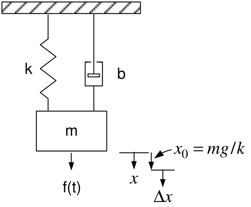
Example: Mass–Spring–Damper System with Two Masses
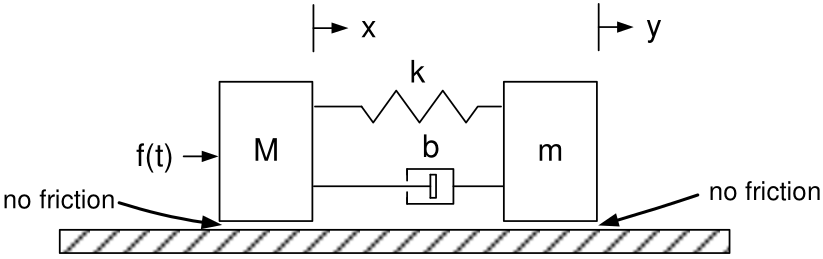
The input is \(f(t)\) and the output is \(y(t)\). The references \(x\) and \(y\) locate \(M\) and \(m\), respectively.
If \(x=y\), the spring is relaxed.
Spring forces: \(F_{mk}=-k(y-x)\) and \(F_{Mk}=+k(y-x)\).
- If \(y-x>0\), the spring pulls \(m\) in the \(-y\) direction and \(M\) in the \(+x\) direction.
Damper forces: \(F_{mb}=-b(\dot{y}-\dot{x})\) and \(F_{Mb}=+b(\dot{y}-\dot{x})\).
- If \(\dot{y}-\dot{x}>0\), the cylinder \(m\) moves right faster than the piston \(M\).
- The piston produces a resistive force on the cylinder, while the cylinder drags the piston to the right.
Example: Mass–Spring–Damper System with Two Masses (continued)
Equations of motion:
\[\begin{aligned} m\frac{d^2y}{dt^2} &=\underbrace{-k(y-x)}_{F_{mk}}-\underbrace{b(\dot{y}-\dot{x})}_{F_{mb}},\\ M\frac{d^2x}{dt^2} &=\underbrace{k(y-x)}_{F_{Mk}}+\underbrace{b(\dot{y}-\dot{x})}_{F_{Mb}}+f(t). \end{aligned}\]
Equivalently,
\[\begin{aligned} m\frac{d^2y}{dt^2}+b\dot{y}+ky&=kx+b\dot{x},\\ M\frac{d^2x}{dt^2}+b\dot{x}+kx&=ky+b\dot{y}+f(t). \end{aligned}\]
With zero initial conditions, the Laplace transforms are
\[\begin{aligned} (ms^2+bs+k)Y(s)&=(bs+k)X(s),\\ (Ms^2+bs+k)X(s)&=(bs+k)Y(s)+F(s). \end{aligned}\]
Example: Mass–Spring–Damper System with Two Masses (continued)
From the previous slide,
\[\begin{aligned} (ms^2+bs+k)Y(s)&=(bs+k)X(s),\\ (Ms^2+bs+k)X(s)&=(bs+k)Y(s)+F(s). \end{aligned}\]
Eliminate \(X(s)\) to solve for \(Y(s)\):
\[\begin{aligned} (Ms^2+bs+k)\frac{ms^2+bs+k}{bs+k}Y(s)&=(bs+k)Y(s)+F(s),\\ (Ms^2+bs+k)(ms^2+bs+k)Y(s)&=(bs+k)^2Y(s)+(bs+k)F(s). \end{aligned}\]
Then
\[\begin{aligned} Y(s)&=\frac{bs+k}{(Ms^2+bs+k)(ms^2+bs+k)-(bs+k)^2}F(s)\\ &=\underbrace{\frac{bs+k}{Mms^4+(Mb+mb)s^3+(Mk+mk)s^2}}_{\text{transfer function }G(s)}F(s). \end{aligned}\]
- \(G(s)\) is unstable because it has two poles at \(s=0\).
Example Spring–Mass–Damper System with a Massless Point
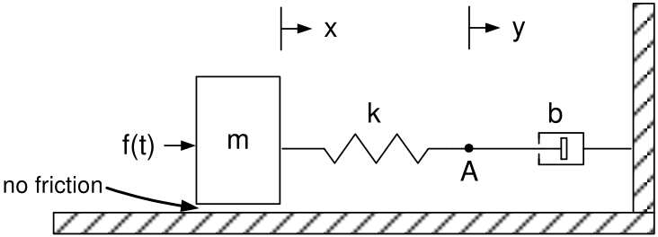
Point \(A\) is the massless connection point of the spring and piston; \(y(t)\) locates it.
The input is \(f(t)\) and the output is \(y(t)\).
First let point \(A\) have a small mass \(m_A\); later let \(m_A\to0\).
\[\begin{aligned} m\frac{d^2x}{dt^2}&=k(y-x)+f(t),\\ m_A\frac{d^2y}{dt^2}&=-k(y-x)-b\frac{dy}{dt}. \end{aligned}\]
Equivalently,
\[\begin{aligned} m\frac{d^2x}{dt^2}+kx&=ky+f(t),\\ m_A\frac{d^2y}{dt^2}+b\frac{dy}{dt}+ky&=kx. \end{aligned}\]
Example Spring–Mass–Damper System with a Massless Point (continued)
From the previous slide,
\[\begin{aligned} m\frac{d^2x}{dt^2}+kx&=ky+f(t),\\ m_A\frac{d^2y}{dt^2}+b\frac{dy}{dt}+ky&=kx. \end{aligned}\]
Let \(m_A\to0\) and take Laplace transforms with zero initial conditions:
\[\begin{aligned} (ms^2+k)X(s)&=kY(s)+F(s),\\ (bs+k)Y(s)&=kX(s). \end{aligned}\]
Eliminating \(X(s)\) gives
\[(ms^2+k)(bs+k)Y(s)=k^2Y(s)+kF(s),\]
and therefore
\[Y(s)=\frac{k}{(ms^2+k)(bs+k)-k^2}F(s) =\underbrace{\frac{k}{bms^3+kms^2+bks}}_{\text{transfer function }G(s)}F(s).\]
\(G(s)\) is unstable because it has a pole at \(s=0\).
Example: Position Input and Massless Point
The input is the position \(y\); the output is the position \(x\).
No mass is shown on the right side of the spring.
- Let \(m_p\) denote the mass of the piston to which the spring is attached.
- Later, let \(m_p\to0\).
- \(z\) denotes the piston position.
If \(y=z\), spring \(k_1\) is relaxed; if \(x=0\), spring \(k_2\) is relaxed.
The relative velocity between the piston and cylinder is \(\dot{z}-\dot{x}\).
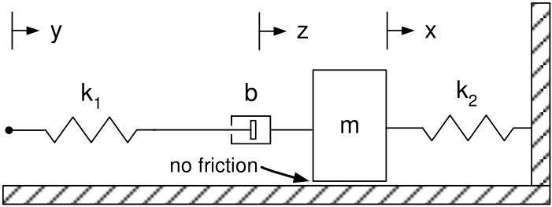
Equations of motion:
\[\begin{aligned} m\ddot{x}&=-k_2x+b(\dot{z}-\dot{x}),\\ m_p\ddot{z}&=-b(\dot{z}-\dot{x})-k_1(z-y). \end{aligned}\]
Example: Position Input and Massless Point (continued)
\[\begin{aligned} m\ddot{x}&=-k_2x+b(\dot{z}-\dot{x}),\\ m_p\ddot{z}&=-b(\dot{z}-\dot{x})-k_1(z-y). \end{aligned}\]
Rearrange and take Laplace transforms with zero initial conditions:
\[\begin{aligned} m\ddot{x}+k_2x+b\dot{x}&=b\dot{z}, & (ms^2+bs+k_2)X(s)&=bsZ(s),\\ m_p\ddot{z}+b\dot{z}+k_1z&=b\dot{x}+k_1y, & (m_ps^2+bs+k_1)Z(s)&=bsX(s)+k_1Y(s). \end{aligned}\]
Eliminate \(Z(s)\):
\[(m_ps^2+bs+k_1)(ms^2+bs+k_2)X(s) =b^2s^2X(s)+k_1bsY(s).\]
Let \(m_p=0\):
\[\begin{aligned} X(s) &=\frac{k_1bs}{(bs+k_1)(ms^2+bs+k_2)-b^2s^2}Y(s)\\ &=\underbrace{\frac{k_1bs}{bms^3+mk_1s^2+(bk_1+bk_2)s+k_1k_2}}_{\text{transfer function}}Y(s). \end{aligned}\]
Simulation
First-Order System
\[\frac{dx}{dt}=-ax+bu,\qquad x(0)=x_0.\]
Convert to discrete time. Let \(x(kT)\) and \(u(kT)\) denote the values of \(x(t)\) and \(u(t)\) at time \(kT\).
Approximate \(dx/dt\) at time \((k+1)T\) by
\[\left.\frac{dx}{dt}\right|_{t=(k+1)T} =\frac{x((k+1)T)-x(kT)}{T}.\]
The discrete-time model is
\[\frac{x((k+1)T)-x(kT)}{T}=-ax(kT)+bu(kT), \qquad x(0)=x_0.\]
Rearranging,
\[x((k+1)T)=(1-aT)x(kT)+Tbu(kT), \qquad x(0)=x_0.\]
Discrete-Time Model
A digital computer simulates the discrete-time model
\[x((k+1)T)=(1-aT)x(kT)+Tbu(kT), \qquad x(0)=x_0.\]
For example, let \(x_0=1\) and \(u(t)=\cos(t)\). Then
\[\begin{aligned} x(T)&=(1-aT)x(0)+Tb\cos(0),\\ x(2T)&=(1-aT)x(T)+Tb\cos(T),\\ x(3T)&=(1-aT)x(2T)+Tb\cos(2T),\\ &\ \vdots \end{aligned}\]
That is, digital computers implement recursive algorithms.
Simulink Diagram
\[\frac{dx}{dt}=-ax+bu,\qquad x(0)=x_0.\]
Let \(u\) be a unit-step input. A Simulink diagram for this system is
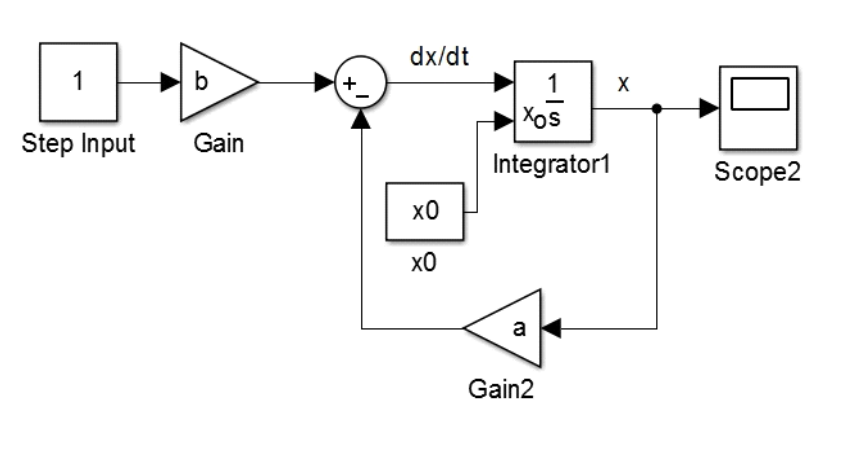
Simulink converts the block diagram to the discrete-time form
\[x((k+1)T)=(1-aT)x(kT)+Tbu(kT), \qquad x(0)=x_0.\]
Simulink uses \(1/s\) to denote the integration block.
Simulink Diagram (continued)
With zero initial conditions, we can represent
\[\frac{dx}{dt}=-ax+bu\]
by
\[X(s)=\frac{b}{s+a}U(s).\]
The Simulink block diagram is
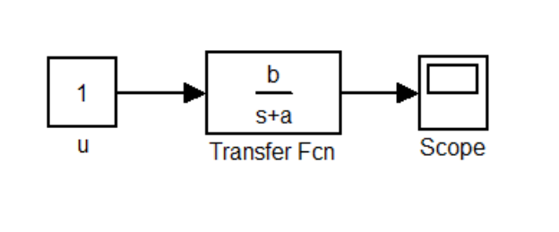
Simulink then converts this to \[x((k+1)T)=(1-aT)x(kT)+Tbu(kT).\]
When using a transfer-function block, Simulink assumes zero initial conditions.
\(u\) is a unit-step input, so a “1” is inside the
constantblock.- \(u(kT)=1\) for \(k=0,1,2,\ldots\)
- Do not put \(1/s\) in this block.
Example Simulation of \(m\dfrac{d^2x}{dt^2}=-kx-b\dfrac{dx}{dt}+f(t)\)
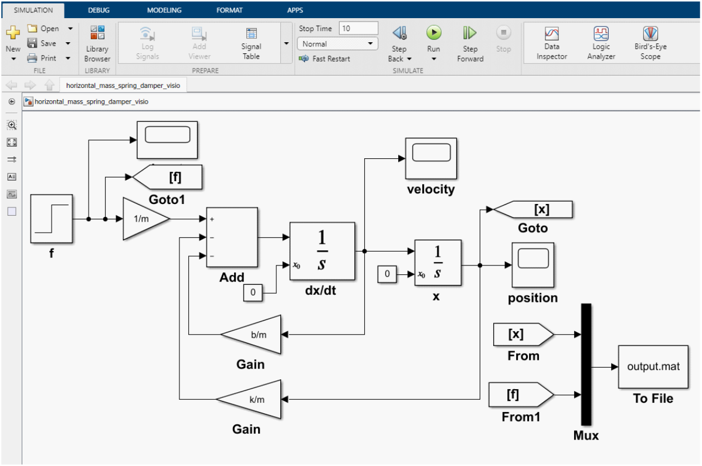
SIMULATIONis selected at the upper left of the Simulink file.Click
MODELING, then clickModel Settings(the gear icon).This opens the
Configuration Parametersdialog box.
Example Simulation of \(m\dfrac{d^2x}{dt^2}=-kx-b\dfrac{dx}{dt}+f(t)\) (continued)
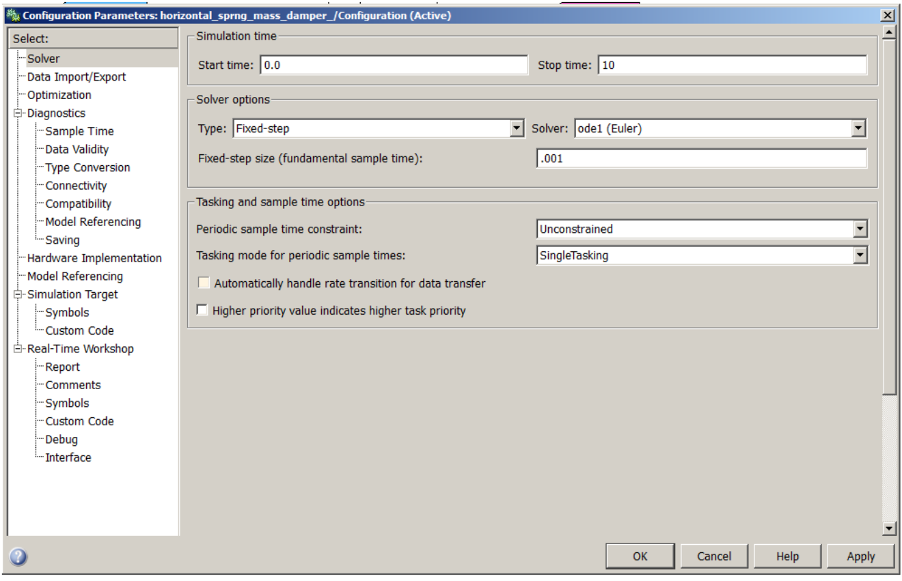
Dialog box for the Configuration Parameters.
Example Simulation of \(m\dfrac{d^2x}{dt^2}=-kx-b\dfrac{dx}{dt}+f(t)\) (continued)
The data is stored in a MATLAB data file called
output.mat.Double-click the “To File” block to open it.
- The data in this file is called
outputdata. - It is an array (matrix) of three rows.
- The first row is time \(t\), the second is position \(x\), and the third is the input \(f\).
- The data in this file is called
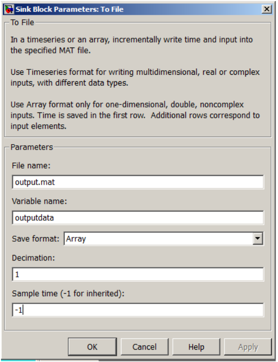

← Course Home · System Modeling and Control · Chapter 4